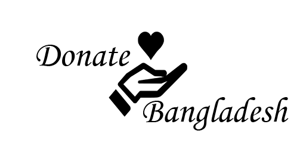

Home
Donate
Impact
Engage
Contact
IMPACT
WaterAid Bangladesh ==>
See the Impact
Concern Worldwide (Bangladesh) ==>
See the Impact
SNAD Foundation Bangladesh ==>
See the Impact
Sightsavers ==>
See the Impact
Save the Children Bangladesh ==>
See the Impact
Care Bangladesh ==>
See the Impact
World Vision Bangladesh ==>
See the Impact
Bangladesh Youth Environmental Initiative ==>
See the Impact
Hellen Keller International ==>
See the Impact
Oxfam International ==>
See the Impact
Jaago Bangladesh ==>
See the Impact
Ashic Foundation ==>
See the Impact